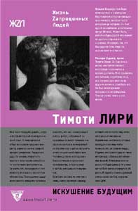

Роберт Форте (сост.) • Искушение будущим: Тимоти Лири • Перевод: Ш. Валиев • жzл • 30.03.2004

Это собрание воспоминаний, посвященных одному из тех людей, характеристика которых не укладывается в одно определение. Кто такой Тимоти Лири – опасный безумец, непризнанный пророк, безответственный псевдоученый, опередивший свое время гений, уголовный преступник или невежественный шарлатан? Насколько пестр перечень увлечений Лири – от медитации до карт Таро, от магии до психобиохимии, от Интернета до священных тибетских текстов – настолько же пестр и список близких ему людей, среди которых присутствуют ученые, политики, звезды Голливуда, предприниматели и музыканты. Все они вспоминают о Тимоти, отдавая дань почтения этой незаурядной фигуре, бросившей вызов всем табу американского общества.
ПРЕССА и КОНТЕКСТ
Тимоти Лири. “Искушение будущим” (Дмитрий Попов, 02.04.2006)
“У каждого тот Тимоти Лири, которого он заслужил” (стр. 156, также 9, 57), – без сомнений, эти слова Лири, как-то произнесённые им, и являются девизом сборника, разумно раскрашенным издателями под цвет таблеток, которым, фактически, он и посвящён (ибо что есть Лири без LSD?). Здесь множество людей, широко известных или известных лишь узкому кругу специалистов (или ценителей), говорят в основном одно и то же: там-то и тогда-то я встретился с Лири впервые, там-то – во второй раз, делали мы то-то, а человек он такой-то, и проч., и проч., и потому, как каждый из респондентов формулирует своё отношение к LSD-гуру, сразу становится понятно, что он за человек. С известной долей условности всех опрошенных составителем Робертом Форте можно разделить на две категории: первая – это те, кто так или иначе остались верными заветам психоделической революции, или как минимум не сожалеют о своём прошлом, а вторая – те, кто, напротив, сохранили верность академической среде, а то и того хуже – перебежали в неё.
Во втором случае, из-за того болезненного отношения к LSD, которое царствует в сегодняшнем обществе (в том числе и благодаря самому LSD-гуру, о чём ниже), трудно ориентироваться в приводимых высказываниях – их авторы, разумеется, не могут выразиться о Лири как о “простом” выдающемся учёном, но своё академическое место и престижный статус в обществе им тоже беречь надо, поэтому у них и получаются осторожные разглагольствования со смутным намёком на контркультуру. Как правило, читать их просто-напросто скучно. К счастью, в сборнике таких конформистов (т. е. “квадратов”, – стр. 333) меньше, нежели стойких психоделических революционеров. Кстати, было бы интересно ознакомиться со списком тех, кто отверг приглашение Форте принять участие в сборнике, посвящённом Тимоти Лири. Просто так. Чтоб знать. “Эта книга не является биографией Лири и не ставит перед собой цели изучения его идей. Принимайте её как мозаику из воспоминаний и впечатлений, как дань его многогранной личности и той роли, которую он играл как лидер общественного, философского и религиозного движения” (стр. 7), – говорит составитель. И хотя биография Лири в книге всё-таки представлена (в предисловии, потом в других заметках она многократно повторяется и обрастает деталями), да и цели его анализируются и препарируются будьте-нате, но в целом это действительно мозаика, причём довольно причудливая, такая, какая может получиться из разноцветных мнений совершенно разных людей, так или иначе связанных с психоделическими наркотиками. Созерцать (т. е. читать) её необычайно интересно – несмотря на многочисленные оговоренные повторы.
Если высчитать среднее арифметическое из всех приведённых мнений, то вне всяких сомнений Лири будет входить в число самых интересных, а, может быть, и самых лучших людей, когда-либо топтавших нашу планету. Естественно, с многочисленными “но” и оговорками – не мог же он, в самом деле, быть ангелом во плоти. Хотя, одно “но” выделяется уж слишком: претензии к Лири, что он придал (предал?) широкой огласке феномен воздействия психоделических наркотиков на человеческое сознание, открыто или косвенно, самолично или со ссылками на других людей предъявляются на протяжении всей книги (стр. 8, 21, 42, 68, 75, 104, 118, 181, 228, 262, 276, 319, 340, 350, 366, 380, 395). Но ведь “осторожная смелость” (стр. 8) Олдоса Хаксли, на которой тот настаивал в этом вопросе – это, как напрямую следует из мозаики, не кредо Лири.
Утверждение, что “использование психоделиков должно ограничиться элитным кругом художников, писателей, учёных и теологов” (стр. 104), более чем не лишено оснований, но не тот человек был Лири, чтобы разделять людей на эзотериков и экзотериков. Если свобода – то всем. Если возможность преодолеть себя – то всем. В конце концов, если кайф – то тоже всем. И эта точка зрения ведь тоже верна. В чём-то. Поэтому некоторые из опрашиваемых Форте достаточно уверенно защищают политику Лири по распространению психоделиков: “В любом случае другого пути не было” (стр. 75), – говорит Рам Дасс (Ричард Алперт), один из деятелей психоделической революции. Яснее же всего позиция Лири по этому вопросу раскрывается в приведённой беседе с “отцом” LSD (тогда как Лири – “апостол”) Альбертом Хофманном (стр. 118-119). Во всяком случае, реплик Лири вполне достаточно для того, чтобы отбросить утверждение, что он затеял всё это исключительно для приобретения славы. Собственно, поводов для таких обвинений LSD-гуру и сам предоставил немало, например, в письме матери, когда он ещё не стал “тем самым Лири”, он написал: “Если быть честным, то я, наверное, мечтаю о славе, в том смысле, что лелею скромную надежду оставить что-то после себя, чтобы отличаться от миллионов безымянных ничтожеств, которые приходят в этот мир, чтобы покинуть его, не оставив следа…” (стр. 13).
Как бы там ни было, эта постоянно обсуждаемая в сборнике тема наводит на одну интересную мысль: необходимость соблюдения тайны в феномене, который определяется как “наркокультура” (хотя это не совсем точное определение, но тем не менее), тождественна необходимости соблюдения тайны в алхимии. Альберт Великий, величайший (простите за тавтологию) адепт алхимии, во вступлении к одному из своих трудов писал буквально следующее: “Прошу тебя и заклинаю тебя Именем Творца Всего Сущего утаить эту книгу от невежд. Тебе открою тайну, но от прочих я утаю эту тайну тайн, ибо наше благородное Искусство может стать предметом и источником зависти. Глупцы глядят заискивающе и вместе с тем надменно на наше «Великое Делание», потому что им самим оно недоступно. Они поэтому полагают, что оно невозможно. Снедаемые завистью к делателям сего, они считают тружеников нашего Искусства фальшивомонетчиками. Никому не открывай секретов твоей работы! Остерегайся посторонних! Дважды говорю тебе, будь осмотрительным” (цит. по Еремей Парнов “Трон Люцифера”, М.: ПОЛИТИЗДАТ, 1985, стр. 184). Неправда ли, сказанное Альбертом Больштедтским (1206-1280) очень напоминает ту ситуацию, в которую попали Тимоти Лири и другие психоделические революционеры? Ведь стремление к освобождению, которое проповедовал Лири – к освобождению при помощи психоделических наркотиков – можно образно отождествить с алхимическим Великим Деланием. Суть – одна и та же, если, конечно, вам известно, что золото никогда не было целью настоящих алхимиков.
Есть и более прямое свидетельство, подтверждающее предложенную идею: согласно астрологическим выкладкам Кэролайн Кэйси, “когда Тим умер, вскоре после полуночи 31 мая 1996 года, Плутон был в зените, что говорит о том, что Тим был успешен в алхимии” (стр. 56). Может, впрочем, и не надо уделять большого внимания этой фразе, всё-таки процитированное “Астрологическое призывание духа Тимоти Лири” – крайне пафосный и откровенно наигранный текст, совершенно в духе представителей т. н. нео-магии, которая никак не может быть названа подлинной магией. Хотя местами “Астрологическое призывание” производит впечатление.
С астрологической точки зрения весьма впечатляюще и отождествление Лири с кометой: “Тим как комета, которая прошла по небу” (стр. 84), – сказал о нём уже цитировавшийся Рам Дасс. Кометы играли значительную роль в вавилонской астрологии, на основе которой, как известно, построена система “европейской” (в т. ч. современной) астрологии, особенно широко кометы использовались в астрологии предзнаменований. И как после этого относиться к замечанию Форте в предисловии: “Его рождение и смерть совпали – так же, как у его кумира Марка Твена – с прохождением кометы” (стр. 30)? А после смерти часть кремированных останков Лири была запущена в космос. Человек-комета? Да, человек-комета – и при жизни, и после смерти. В буквальном смысле.
“В жизни некоторых своих близких, равно как и миллионов людей, которых он не знал лично, он иногда был разрушительной силой” (стр. 42), – Фрэнк Бэррон, один из деятелей психоделической революции. Но для кометы это само собой разумеется. Великие не только светят остальным людям – они должны и забирать у них что-то взамен. Просто об этом по разным причинам не любят говорить. “Тимоти был провокатором” (стр. 79), – замечает Рам Дасс, и этим многое расставляет по своим местам. Другое дело, можно ли быть одновременно замечательным человеком и провокатором? Лири, как видно, мог.
“…Я думаю, что не пройдёт и двадцати пяти лет, как он [Тимоти Лири] займёт место одного из самых выдающихся мыслителей нашего времени, одного из пионеров, создавших интеллектуальную закваску, из которой вырастут многие новации грядущего века” (стр. 69), – пророчествует Уолтер Хьюстон Кларк, один из деятелей психоделической революции, в своей статье, которая впервые была опубликована в 1976 (без указания конкретных сроков ему вторят и другие респонденты). Несложные вычисления показывают, что “канонизация” Лири должна была бы произойти к 2001. Но что вместо этого мы имеем? То, что книга о Лири выходит в серии “Жизнь Zапрещённых Людей”. Общество оказалось слишком инертным, трусливым и тупым, чтобы уложиться в четверть века. Через сто – другое дело. Наверно. Или мы слишком оптимистичны?…
Расправившись с общими замечаниями, отметим некоторые особенно впечатляющие моменты в сборнике. Несомненно, очень интересно читать письма Олдоса Хаксли, несмотря на то, что они не такие уж и информационные. И жаль, конечно, что их так мало. Без сомнений, самое оригинальное обращение к Лири вышло из-под пера Кена Кизи – “Святой Тимоти на Шоссе”. Тогда как “Миста Лири, он умер” Хантера С. Томпсона откровенно разочаровывает и оставляет довольно сильно впечатление, что это дежурная отписка. С другой стороны: друг умер – чего пыжиться?
Пожалуй, самое лучшее и оригинальное интервью с Лири записал Пол Красснер. Точнее, это не интервью, а “Игра в интеллектуальный теннис”. Если и рисовать портрет Тимоти Лири с текста, то, скорее всего, именно с этого. Назвать себя “неотехнологиеским язычником” (стр. 156) – это круто, это действительно свободный полёт мысли. Тем более, что логическое обоснование этого термина у Лири более чем притянуто за уши. Зато от него рукой подать до того утверждения, что “есть несомненная аналогия между тем, как рецепторные центры марихуаны и ЛСД или опиума, активируют определённые участки мозга, и тем, как мы загружаем какие-то программы в компьютер” (стр. 158). А вот самооценка LSD-гуру: “Я думаю, что я прожил одну из самых интересных, забавных, неповторимых жизней” (стр. 163). И небольшое уточнение: “Примерно треть из моих действий была абсолютно тупой, вульгарной, грубой. Другая треть просто банальной. Но одна треть была гениальной” (стр. 164).
Не менее интересно и интервью, взятое редактором сборника у Джейрона Ланьера, автора термина “виртуальная реальность”. Ланьер подвергает справедливой, как нам кажется, и весьма обстоятельной критике утверждение Лири, что “компьютеры станут кислотой восьмидесятых” (стр. 169). Если в вопросе о том, допустимо ли нести психоделическую культуру в массы (Ланьер обсуждает и эту проблему – стр. 181), позицию Лири с известными оговорками всё-таки можно принять, то в данном случае приходится признать, что LSD-гуру смотрел на некоторые вещи слишком оптимистично и далеко не объективно. Кстати, о термине “гуру”: Ланьер замечает, что “для тех людей, у которых незначительная часть жизни проходит в социуме, он [Лири] действительно пример для подражания” (стр. 177), и существенно уточняет это определение: “Тим при общении с людьми влиял на них, как гуру, но он никогда не злоупотреблял этим, что само по себе большая редкость. … Обладать властью и не пользоваться ею – это один из самых глубоко моральных поступков, на который способен человек” (там же). Хотя, конечно, вместо затхло-гуманитарного термина “глубоко моральный” следовало бы просто сказать “сильный”. Далеко не каждый смог бы отмахнуться от власти, которая сама прыгает в руки. Наверное, одного этого вполне достаточно, чтобы “канонизировать” Лири.
С увлечением читается и интервью с Теренсом Маккеной, специалистом в области шаманизма и этномедицины, именуемым не иначе как “новым Лири” (стр. 188). Маккена, по сути, оправдывает Лири за “обнародование” им эзотерических психоделиков. Несомненно, помимо логических доводов, Маккена склоняется к этой позиции и из-за своего восхищения Лири: “Ну как вы можете ненавидеть человека, который каждое предложение заканчивает смехом?” (стр. 187). Потом, правда, он поправляется: “И всё же это очень противоречивый человек” (стр. 189). Академический шаман отмечает ещё одну выдающуюся черту Лири: “Он обосновал невероятно важное положение о том, что исследователь сознания должен исследовать прежде всего самого себя. … На мой взгляд, это было его главным вкладом и его жертвой” (стр. 195). И хотя, например, у биологов и медиков издревле принято исследовать на себе какие-то новые препараты или сыворотки, но за психиатрами такого не наблюдалось. Тем более в отношении LSD: кислота и психиатр – вообще несовместимые понятия. Интересно, что это неоднократно отмечаемое в книге обстоятельство (“психиатры принимают ЛСД и получают психотические кошмары”, – стр. 364, см. также стр. 214, 300, 369, 404) полностью согласуется с критикой Рене Генона психоанализа и других психиатрических методик и его указанием на инфернальную подоплёку этих техник манипулирования “подсознательным” (см. Рене Генон, “Царство количества и знамения времени”, глава 34 “Зло психоанализа”).
Само собой, особняком в сборнике стоит длиннющий очерк Ралфа Метцнера “Из Гаварда в Сихуатанехо”, в котором достаточно подробно расписаны события того исследовательского процесса, который и породил психоделическую революцию. Ценность этого очерка увеличивается благодаря описаниям трипов первопроходцев, их переживаний и оценок, связанными с психоделическим опытом. Так что, если у вас не хватит сил на всю книгу (такое вполне может быть), то этот очерк прочитайте непременно.
Что и говорить, составитель Роберт Форте поработал на славу, создавая этот сборник. И хотя видно, что Лири для него – учитель, гуру, авторитет и т. д. и т. п., он старался быть объективным и опросил людей, придерживающихся прямо противоположной его точки зрения. Лучший образчик – интервью с Оусли Стэнли (AOS.3), художником и дизайнером, деятелем психоделической революции. Он нещадно критикует Лири по многим вопросам, и есть в его позиции, нередко откровенно жестокой (“Лири был неправ. Он причинил вред, и я не из тех, кто будет праздновать сожжение города на том основании, что на пепелище будет построен новый и красивей прежнего”, стр. 354), что-то такое, что заставляет относиться к ней с пониманием – даже Форте не всегда находит, что возразить ему, хотя в некоторых других интервью ему и удавалось поколебать позицию критиков. Отмеченная выше противоречивость Тимоти Лири, равно как и его провокационность, в наибольшей степени, думается нам, проявляется в его отрицании духовности (стр. 48, 115, 178, 189, 196). Истории, типа тех, что рассказывает Том Дэвис (сценарист): “Я разговариваю с Тимом по телефону. Так… что ты сейчас делаешь? Я: Я пытаюсь читать Библию с самого начала. Тим: О, Боже, ещё один! Я: Не волнуйся, Тим, навряд ли я осилю даже книгу Левит. Тим: Конечно, не осилишь. Тебе что больше нечем заняться?” (стр. 87), – не такие уж и показатели этого самого отрицания духовности. Такие истории – чистый прикол. Есть наблюдения и посерьёзнее: “…Я не помню, чтобы я когда-нибудь видел в нём образец духовной личности, и я не думаю, что он сам видел себя в этой роли” (стр. 327), – замечает Хьюстон Смит, один из центральных участников Псилоцибинового проекта в Гарварде. По меньшей мере странно ожидать от человека, духовно просветлившего и даже воскресившего тысячи, если не миллионы людей, необузданной реакции на любую духовную, метафизическую или религиозную тему. Ведь даже сам термин “психоделик” означает “открывающий душу” (стр. 217). Кажется естественным, что человек, освободивший себя (посредством психоделических наркотиков), начинает понимать узость человеческих рамок и приходит к выводу, что, как минимум, “там что-то есть”. Но Лири в этом плане совершенно непробиваем. Он был учёным до мозга костей – и умер таким. Ладно бы просто учёным, так ведь ещё и технофилом. Нет, этого нам никак не понять.
Пожалуй, объяснить все “нестыковки” в личности Лири – или, точнее, попытаться это сделать, – а заодно и закончить нашу рецензию на более или менее глубокомысленной ноте, можно, процитировав того же Хьюстона Смита: “Я смотрю на жизнь, которую он [Тимоти Лири] прожил, с благодарностью, но не без печали. С благодарностью не только из-за того, что он помог мне проникнуть в мою собственную душу, но также за дружбу, радость общения и то возбуждение, которое он создал в те гарвардские годы. И с печалью, потому что его жизнь пошла под откос. Сколько талантов и такой печальный конец [Лири умер от рака простаты]. Но дух его так и остался несломленным” (стр. 339).
S. Хотелось бы особенно подчеркнуть, что по отношению к Тимоти Лири следует говорить не о наркотиках, а исключительно о психоделических наркотиках: в сборнике т. н. “тяжёлые наркотики” редко, но категорически отвергаются (стр. 36, 119, 399). Это, как говорят у них в Одессе – две большие разницы. Знаменитый “Дневник наркомана” Алистера Кроули (он, кстати, упоминается один раз в сборнике, правда, каким-то неестественным образом – стр. 130) – воплощение подвалов гестапо по сравнению с самыми инфернальными трипами, описанными в “Искушении будущим”. И ещё: если т. н. истеблишмент (или т. н. система) совершенно не заинтересован(а) в распространении психоделических наркотиков, т. к. это может привести к потере контроля над массами (которые после LSD-преображения перестанут быть таковыми), то героин, пожалуй, работает ему (ей) только на руку. А иначе, объясните нам, пожалуйста, почему менты держат героиновые точки, а кислотных дилеров сажают с шумом и помпой?